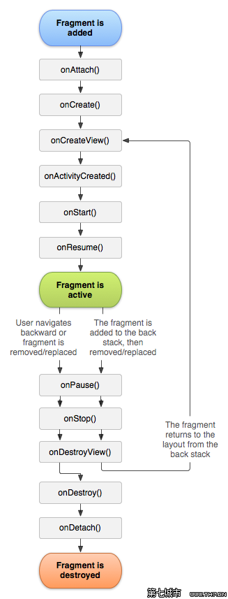
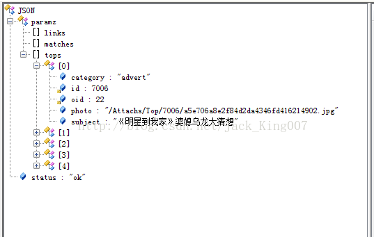

上一节讲到将TTFragment依附activity上面 那现在看看Fragment的里面的内容
1.首先我需要一个Listview 展示数据，正好Fragment 里面有个内置的Listview的Fragment ListFragment 为了熟悉Fragment里面怎么使用 我们先看看生命周期

第一个 attach方法 先依附在activity的内存空间
Oncreate 方法创立Fragment 在Fragment里面要使用的数据，现在这里初始化好===onActivityCreated
OncreateView 创立布局，在这里讲布局初始化好，可以在这里初始化空间
后面使用到其他生命周期我们在讲
SO，我们现在onActivityCreated 里面进行联网操作 并进行json解析
"paramz": {
"links": [],
"matches": [],
"tops": [
{
"category": "advert",
"id": 7006,
"oid": 22,
"photo": "/Attachs/Top/7006/a5e706a8e2f84d2da4346fd416214902.jpg",
"subject": "《明星到我家》婆媳乌龙大猜想"
},
{
"category": "map",
"id": 7007,
"oid": 4264,
"photo": "/Attachs/Top/7007/35d89871ca574af18af54948ce75f0ec.jpg",
"subject": "济南一小区现马桶家禽等"占车位神器""
},
{
"category": "map",
"id": 7002,
"oid": 4262,
"photo": "/Attachs/Top/7002/5d7f3805d54d4da6a37355a1b084e5dc.jpg",
"subject": "山东聊城被扎针女婴出院回家"
},
{
"category": "map",
"id": 6999,
"oid": 4254,
"photo": "/Attachs/Top/6999/e219606ff96147ce90310f1bb89bd13b.jpg",
"subject": "温州市区“卖萌”消防栓引市民围观"
},
{
"category": "advert",
"id": 6871,
"oid": 23,
"photo": "/Attachs/Top/6871/0388422c5adb4792b3a010115125b923.jpg",
"subject": "活动：全民付点亮生活"
}
]
},
"status": "ok"
}json 结构图 如果没有这个工具 可以看 我昨天写的文章

最外层是 {} 用jsonObject
JSONObject jsonObject = JSONObject
.parseObject(response);
2.通过getString 可以得到 特征码 和paramz 然后继续解析当然你要先解析特征码 看是不是 成功
String status = jsonObject.getString("status");
if ("ok".equals(status))
3.然后解析paramz 因为还是{} 所以还是用jsonobject
JSONObject jsonObject2 = jsonObject
.getJSONObject("paramz");
4.然后里面的tops是我们想要的
通过getString 获得tops里面的内容
String tops = jsonObject2.getString("tops");
5.然后根据tops里面的内容 写实体类
我FastJson也是第一次用 先把所有属性写出来吧 然后把tosTRing 方法写出来 构造 和空构造
package com.example.android20_lzhxw.beans;
/**
* 导航上面的数据的实体类
* 要展示出去：图片photo（url）、subject
* @author cj
*
*/
public class TopPagerInfo {
private String id,oid,category,photo,subject;
public TopPagerInfo() {
super();
}
public TopPagerInfo(String id, String oid, String category, String photo,
String subject) {
super();
this.id = id;
this.oid = oid;
this.category = category;
this.photo = photo;
this.subject = subject;
}
@Override
public String toString() {
return "TopPager [id=" + id + ", oid=" + oid + ", category=" + category
+ ", photo=" + photo + ", subject=" + subject + "]";
}
public String getId() {
return id;
}
public void setId(String id) {
this.id = id;
}
public String getOid() {
return oid;
}
public void setOid(String oid) {
this.oid = oid;
}
public String getCategory() {
return category;
}
public void setCategory(String category) {
this.category = category;
}
public String getPhoto() {
return photo;
}
public void setPhoto(String photo) {
this.photo = photo;
}
public String getSubject() {
return subject;
}
public void setSubject(String subject) {
this.subject = subject;
}
}
Fastjson就这里方便 你只要写出实体类，和json 就能帮你解析成集合数据
List<TopPagerInfo> list = JSONArray.parseArray(
tops, TopPagerInfo.class);
// 填充在ViewPager的item中
List<View> views = new ArrayList<View>();
for (int i = 0; i < list.size(); i++) {
TopPagerInfo topPagerInfo = list.get(i);
View view = View.inflate(getActivity(),
R.layout.item_pager, null);
ImageView imgv = (ImageView) view
.findViewById(R.id.imgv_pagerItem);
imgv.setImageResource(R.drawable.ic_launcher);
ImageLoader.loadImg(AppURLFinal.URL_IMGBASE
+ topPagerInfo.getPhoto(), imgv,
getActivity());
TextView txtv = (TextView) view
.findViewById(R.id.txtv_pagerItem);
txtv.setText(topPagerInfo.getSubject());
views.add(view);
}
然后将数据填充到广告栏里面去 其中数据源就是 上面的 集合 views
广告栏的布局 可以看到上面是一个自定义viewpage 下面是一个页码
<?xml version="1.0" encoding="utf-8"?>
<RelativeLayout xmlns:android="http://schemas.android.com/apk/res/android"
android:layout_width="match_parent"
android:layout_height="100dp">
<com.example.android20_lzhxw.mviews.TopViewPager
android:id="@+id/pager_header"
android:layout_width="fill_parent"
android:layout_height="100dp" >
</com.example.android20_lzhxw.mviews.TopViewPager>
<TextView
android:id="@+id/txtv_header"
android:layout_width="wrap_content"
android:layout_height="wrap_content"
android:background="#ff0000"
android:padding="5dp"
android:textColor="#ffffff"
android:layout_alignBottom="@+id/pager_header"/>
</RelativeLayout>自定义viewpage 里面 加了一个事件处理机制 package com.example.android20_lzhxw.mviews;
import android.content.Context;
import android.support.v4.view.ViewPager;
import android.util.AttributeSet;
import android.view.MotionEvent;
public class TopViewPager extends ViewPager{
public TopViewPager(Context context) {
super(context);
}
public TopViewPager(Context context, AttributeSet attrs) {
super(context, attrs);
}
@Override
public boolean dispatchTouchEvent(MotionEvent ev) {
getParent().requestDisallowInterceptTouchEvent(true);
return super.dispatchTouchEvent(ev);
}
}
View header = View.inflate(getActivity(),
R.layout.header, null);
TopPagerAdapter pagerAdapter = new TopPagerAdapter(
views);
pager.setAdapter(pagerAdapter);
PagerAdapter有四个方法
1getCount（）总共有几个view
2.instantiateItem（）初始化position处的item
3.destroyItem 销毁条目上的信息
4.isViewFromObject
功能：该函数用来判断instantiateItem(ViewGroup, int)函数所返回来的Key与一个页面视图是否是代表的同一个视图(即它俩是否是对应的，对应的表示同一个View)
package com.example.android20_lzhxw.adapters;
import java.util.List;
import android.support.v4.view.PagerAdapter;
import android.view.View;
import android.view.ViewGroup;
import com.example.android20_lzhxw.beans.TopPagerInfo;
public class TopPagerAdapter extends PagerAdapter {
private List<View> views;
public TopPagerAdapter(List<View> views) {
super();
this.views = views;
}
@Override
public int getCount() {
return views == null ? 0 : views.size();
}
@Override
public Object instantiateItem(ViewGroup container, int position) {
container.addView(views.get(position));
return views.get(position);
}
@Override
public void destroyItem(ViewGroup container, int position, Object object) {
container.removeView(views.get(position));
}
@Override
public boolean isViewFromObject(View arg0, Object arg1) {
return arg0==arg1;
}
}
然后设置页面 在不懂的时候显示当前页码和 滑动的时候设置页面信息
//textView的显示内容，标示Pager页码
final TextView txv_page=(TextView) header.findViewById(R.id.txtv_header);
final int size=views.size();
txv_page.setText("1/"+size);
pager.setOnPageChangeListener(new OnPageChangeListener() {
@Override
public void onPageSelected(int arg0) {
txv_page.setText(arg0+1+"/"+size);
}
@Override
public void onPageScrolled(int arg0, float arg1, int arg2) {
}
@Override
public void onPageScrollStateChanged(int arg0) {
}
});
因为listFragment 内置了一个listview 所以 先要获取到
// 获取ListFragment的ListVIew
ListView listView = getListView();
然后将 Viewpage 设置到listview 头部
// 添加头部视图的时候，必须在setAdapter之前。
listView.addHeaderView(header);
下一节讲解填充listview的数据